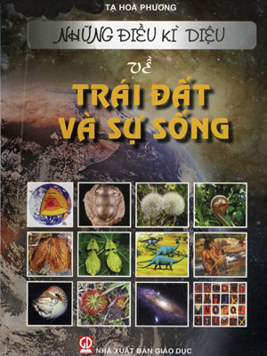

Cuốn sách “Những điều kỳ diệu về Trái Đất và sự sống” của tác giả Tạ Hoà Phương mô tả những điều khó tin nhưng có thật trong thế giới sinh vật từ cổ chí kim, cho ta thấy sự kỳ diệu của thiên nhiên. Đã xa rồi thời kỳ thống trị của các truyền thuyết hoang đường, cách giải thích mơ hồ về nguồn gốc và thời gian sinh thành Trái Đất. Những cách giải thích đó đã không còn thỏa mãn được nỗi khát khao của con người trong việc tìm hiểu cội nguồn hành tinh đã cưu mang mình từ cõi hỗn mang vươn lên ánh sáng văn minh. “Những điều kỳ diệu về Trái Đất và sự sống” do Nhà xuất bản Giáo dục ấn hành năm 2007 gồm 4 chương: Chương I: Trái Đất – cái nôi của sự sống; Chương II: Sinh vật trong lịch sử Trái Đất; Chương III: Sinh vật xưa và nay; Chương IV: Hành tinh tràn đầy sự sống. Cuốn sách dày 176 trang, khổ 19x27. Bìa sách được thiết kế đơn giản nhưng thể hiện sự đa dạng và phong phú về sự sống của Trái Đất. Nơi chúng ta đang đứng là điểm nào của Trái Đất? Đó có phải là những vị trí độc đáo? Hành tinh kỳ diệu này của chúng ta chứa đựng những điều kỳ diệu nào? Nguồn gốc sự sống của Trái Đất? Còn bao nhiêu điều khiến chúng ta thắc mắc về Trái Đất. Trái Đất là hành tinh duy nhất có sự sống trong hệ Mặt Trời. Nhưng không mấy người cảm nhận điều này như một ân huệ lớn và độc nhất vô nhị của thiên nhiên đã ban phát cho muôn loài sinh vật mà con người là trung tâm. Bạn đọc sẽ bị lôi cuốn vào thế giới sinh vật với biết bao điều kỳ lạ, bí ẩn bởi những câu chữ và hình ảnh minh họa đa dạng. Cùng với những lực kiến tạo vĩ đại gây chuyển động trên quy mô toàn cầu, thế giới sinh vật Trái Đất cũng không ngừng biến đổi, thích nghi và phát triển. Những chu kỳ của sinh giới có tác động không nhỏ đến quá trình địa chất xảy ra trong quá khứ, tạo nên hơi thở và nhịp sống kỳ diệu của hành tinh này.  Tác giả đã tái hiện lược sử Trái Đất từ buổi đầu sơ khai đến nay với những vận động, va chạm không ngừng nghỉ của các mảng thạch quyển. Qua rất nhiều trang sách, Hòa Phương đã giới thiệu về thế giới sinh vật hóa đá – từ những sinh thể nhỏ xíu đến những con thú khổng lồ, từ những hóa thạch cá quý hơn vàng được phát hiện trong lòng đất nước ta đến những “hóa thạch sống” còn tồn tại đó đây trên thế giới. Độc giả còn có cơ hội tìm hiểu vai trò của sinh vật trong việc hình thành các tầng đá, các khoáng sản. Bằng cách nào cây xanh mách bảo con người nơi ẩn náu của quặng mỏ? Điều gì làm nên hiện tượng lân quang óng ánh trên mặt biển đêm? Vì sao vị trí thủy tổ của Chim Thủy tổ bị lung lay? Rồi cớ sao cá Chình châu Âu phải vượt hàng ngàn cây số qua Đại Tây Dương để sinh con đẻ cái? Vì sao chuột Lem phải rồng rắn hàng triệu con về phía bắc để “tự sát tập thể” trong làn nước giá lạnh của Bắc Băng Dương?... Những kết quả nghiên cứu tưởng chừng vô cùng khó khăn, khó hiểu của các ngành khoa học về Trái Đất, trong đó có Cổ sinh – Địa tầng học, được trình bày một cách cuốn hút, dễ hiểu. Mỗi trang sách như một cửa sổ nhỏ mở ra những chân trời rộng lớn, cho ta thấy những nét sinh động của Trái Đất, nơi còn biết bao điều cần được khám phá. Theo các nhà cổ sinh, sự sống xuất hiện trên Trái Đất cách đây khoảng 3 tỉ năm. Từ đó đến nay, thế giới sinh vật đã trải qua một quá trình phát triển vô cùng phức tạp. Các nhóm sinh vật kế tiếp nhau xuất hiện rồi cùng bị tiêu diệt do những biến động không ngừng của điều kiện môi trường. Nhưng cũng có loài sinh vật sống từ nhiều triệu năm trước, đến nay vẫn tiếp tục sinh tồn với hình dạng, kích thước hầu như không biến động. Chúng được coi là những “hóa thạch sống”. Người ta chỉ biết những sinh vật nào có cấu tạo thích nghi đặc biệt, khi mà sự chọn lọc tự nhiên đạt tới mức ổn định, mới có thể vượt qua những thử thách khắc nghiệt của thời gian. Thế giới hữu sinh thật muôn màu muôn vẻ. Chúng ta đã từng nghe đến loài cây “ăn thịt”, sau khi bẫy được mồi, chúng tiết ra một chất dịch giống như dịch vị của động vật để tiêu hóa thức ăn. Thực vật trang điểm cho Trái Đất bằng màu xanh huyền diệu của mình. Chúng cố vươn cao, trải rộng, chiếm lĩnh những khoảng không gian bao la ngập gió và nắng trời. Chúng phô bày những cánh hoa sặc sỡ hoặc những chùm quả mọng đậm hương để quyến rũ côn trùng, chim chóc... Trái lại, động vật trong cuộc đấu tranh sinh tồn lại có xu hướng hòa hợp với môi trường. Nhiều động vật, côn trùng cố tình lánh mặt vào thiên nhiên. Do vậy, mặc dù có rất nhiều loài côn trùng sống trên mặt đất nhưng chúng ta lại khó có thể nhận ra chúng. Chẳng hạn như những con kỳ nhông ẩn mình trong cát, những con cá Tetradon có màu xanh khắp mình giống như phiến đá phủ rêu xanh, con bọ ngựa có thân hình màu xanh lá cây nhưng đôi chân trước lại có một đốt màu tím nhạt, khi giơ chân lên, các đốt màu tím phô ra như cánh của một bông hoa mới nở... Một số động vật có khả năng thay đổi màu sắc tùy theo hoàn cảnh sống như cào cào, tắc kè hoa, bươm bướm, bọ lá... Ngụy trang là một phương thức tự vệ và tấn công hữu hiệu của nhiều loài động vật, muốn tồn tại và duy trì nòi giống, chúng không ngừng có xu hướng vươn tới sự hoàn thiện. Cuốn sách cũng dành một số trang viết về con người – đỉnh cao tiến hóa của vật chất sống trên Trái Đất. Sự xuất hiện của loài người dường như có quan hệ với khởi nguồn của một đại dương ở Đông Phi. Từ khi xuất hiện trên Trái Đất, loài người đã không ngừng đấu tranh để tồn tại và phát triển. Với năng lực trí tuệ ngày càng hoàn thiện, con người đã vươn lên làm chủ thiên nhiên, đạt được những thành tựu to lớn trong nhiều lĩnh vực hoạt động. Trái Đất là một hành tinh xanh tràn đầy sự sống và là cái nôi diệu kỳ của sự sống. Với thời gian, những chứng cứ khoa học để giải quyết vấn đề nguồn gốc loài người được phát hiện và tích lũy ngày càng nhiều. Đó chính là hóa thạch của các dạng người cổ, nhất là những hóa thạch có tính trung gian, cho phép khẳng định nguồn gốc động vật của loài người. Những hóa thạch quý giá đó phần lớn đã được phát hiện ở Đông Phi, khiến cho nơi đây được suy tôn là cái nôi của nhân loại. Từ nơi khởi nguồn đó, các bầy người nguyên thủy đã phân tỏa, chiếm lĩnh các vùng đất khác trên hành tinh. Trong công trình nghiên cứu của mình, tác giả Tạ Hòa Phương đã liệt kê những phát hiện quan trọng nhất của các nhà khảo cổ về chuỗi tiến hóa từ người vượn thành người như: người vượn; người khéo léo, người đứng thẳng, người cận dại, người hiện đại. ở giai đoạn người hiện đại thì các công cụ lao động của họ đã rất phong phú và đa dạng, đã mang tính nghệ thuật hoặc huyền bí. Nền văn minh của loài người từ đó đến nay đã phát triển và hoàn thiện với tốc độ ngày càng cao. Càng ngày, con người càng can thiệp sâu rộng vào thiên nhiên vì lợi ích của mình. Với đà tăng nhanh dân số, với sự phát triển thần tốc của khoa học kỹ thuật, con người không ngừng tăng cường khai thác thiên nhiên. Tác động của con người ngày nay là một nhân tố mạnh mẽ nhất làm thay đổi bộ mặt Trái Đất, trong đó có sinh quyển. Con người có thể trồng nên những cánh rừng tươi tốt trên miền đồi trơ trọi đá ong, dẫn nước vào cải tạo sa mạc, tát cạn đầm lầy, đổi hướng dòng sông, đắp đê ngăn nước mặn... tạo nên những đường nét mới của cảnh quan địa lý. Theo tác giả, con người là chủ nhân của hành tinh mang sự sống và là sinh vật tiến hóa nhất giữa muôn loài. Do đó, con người phải thấy được trách nhiệm của mình, gìn giữ và bảo vệ môi trường để Trái Đất mãi đẹp, giàu sức sống. Có thể nói, chỉ trong gần 200 trang của cuốn sách với những hình ảnh minh họa sống động, tác giả Tạ Hòa Phương đã cho chúng ta thấy cả một thế giới đa dạng từ những sinh vật nhỏ bé đến những sinh vật tiến hóa như con người. Phát hiện kể trên chứng tỏ rằng quanh ta còn có biết bao điều bí mật chưa được khám phá. Cũng thông qua công trình nghiên cứu của mình, tác giả cũng muốn nhắn nhủ tới chúng ta, những chủ nhân của hành tinh này hãy sống và bảo vệ lấy Hành tinh xanh đó để nó có thể mãi mãi tươi đẹp và tràn đầy sự sống. Nhấn vào đây để đọc sách